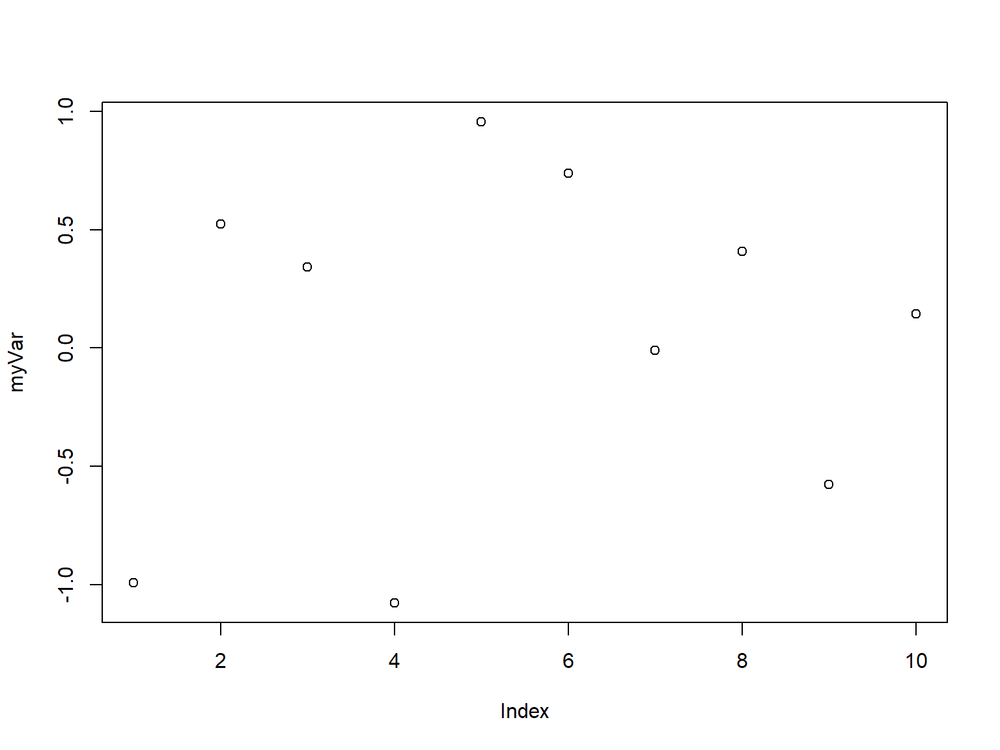
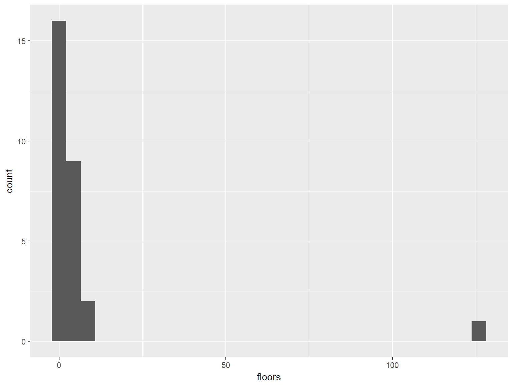
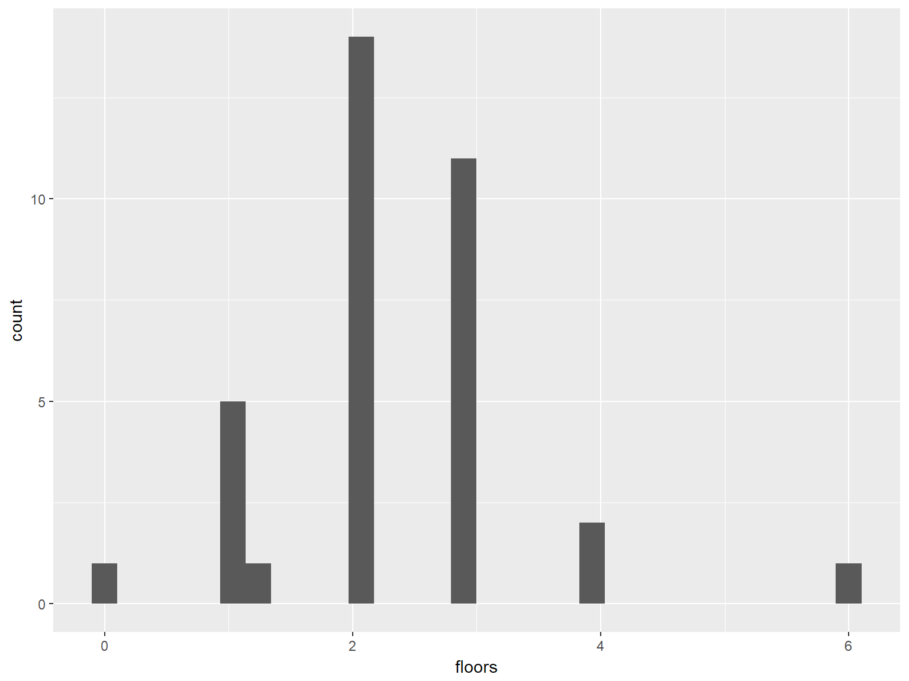

R fundamentals
Locke Data
About R
R
- Open source language written in 2001
- Backwards compatible with commercial but out of support language S(plus)
myVar <- rnorm(10)
plot(myVar)
Things to keep in mind
- R works in-memory
- R works on a single processor
- R is basically very old and so quirky
- R is case-sensitive
- For later “There’s a package for that”
Alt-R
As R is open source, there are some commercial implementations of R:
- Microsoft R Server
- TIBCO TERRE
- Oracle
Why use R
- Great for stats and data viz
- Super extendable
- Use lots of other languages through it
Why use R
# A demo of dynamic CSV processing
list.files("../data", full.names = TRUE) %>%
map_df(read_csv, col_types=cols("c")) %>%
bind_rows() ->
allmydataWhy use R
p<- ggplot(readFun("../data/csv1.csv"), aes(x=floors)) +
geom_histogram()
p
Why use R
p %+% readFun("../data/csv3.csv")
Why use R
Using RStudio
IDE
An IDE is an Interactive Development Environment. The aim is to make coding easier and, therefore, make you more productive.
Where everything is

Code-completion
As we’re typing Rstudio can help us out.
Projects
- Projects are folder structures with an extra file.
- This extra file is used by RStudio to open the directory.
- Projects can have some options associated with them.
Exercises
- Create a new project called Rtraining
- Create a new file called MyFirstScript.R
- Use code completion to see what functions are available to you that begin with
a - Q: Will you get a different list if you typed
A?
Useful resources
Local help
- Code-completion
?functionand??function

Cheatsheets
Online resources
Offline / in-person
R super-basics
R data types
| Data type | Example |
|---|---|
| Integer | 1 |
| Logical | TRUE |
| Numeric | 1.1 |
| String / character | “Red” |
| Factor (enumerated string) | “Amber” or 2 in c(“Red”,“Amber”,“Green”) |
| Complex | i |
| Date | “2017-09-15” |
Maths
| Action | Operator | Example |
|---|---|---|
| Subtract | - | 5 - 4 = 1 |
| Add | + | 5 + 4 = 9 |
| Multiply | * | 5 * 4 = 20 |
| Divide | / | 5 / 4 = 1.25 |
| Raise to the power | ^ | 5 ^ 4 = 625 |
| Modulus | %% | 9 %% 4 = 1 |
| Integer division | %/% | 9 %/% 4 = 2 |
| Basic sequence | : | 1:3 = 1, 2, 3 |
Exercises
- See if
piexists - What is the result of
pi^2?
Comparison
| Action | Operator | Example |
|---|---|---|
| Less than | < | 5 < 5 = FALSE |
| Less than or equal to | <= | 5 <= 5 = TRUE |
| Greater than | > | 5 > 5 = FALSE |
| Greater than or equal to | >= | 5 >= 5 = TRUE |
| Equal | all.equal() | all.equal(0.5 - 0.3,0.3 - 0.1) is TRUE |
| Exactly equal | == | (0.5 - 0.3) == (0.3 - 0.1) is FALSE, 2 == 2 is TRUE |
| Not equal | != | (0.5 - 0.3) != (0.3 - 0.1) is TRUE, 2 != 2 is FALSE |
Exercises
- Is pi greater than 3?
- What are the results if you check to see if a sequence of 1 to 5 is less than or equal to 3?
Logic
| Action | Operator | Example |
|---|---|---|
| Not | ! | !TRUE is FALSE |
| And | & | TRUE & FALSE is FALSE, c(TRUE,TRUE) & c(FALSE,TRUE) is FALSE, TRUE |
| Or | | |
TRUE | FALSE is TRUE, c(TRUE,FALSE) | c(FALSE,FALSE) is TRUE, FALSE |
| Xor | xor() | xor(TRUE,FALSE) is TRUE |
| Bitwise And | && | c(TRUE,TRUE) && c(FALSE,TRUE) is FALSE |
| Bitwise Or | || |
c(TRUE,FALSE) || c(FALSE,FALSE) is TRUE |
| In | %in% | "Red" %in% c("Blue","Red") is TRUE |
| Not in | !( x %in% y) | !("Red" %in% c("Blue","Red")) = FALSE |
Exercises
- See what’s in the variable
LETTERS - Write a check to see if “a” is present in
LETTERS - Find out which values in the sequence 1 to 10 are greater than or equal to 3 and less than 7
States
| States | Representation |
|---|---|
| True | TRUE 1 |
| False | FALSE 0 |
| Empty | NULL |
| Unknown | NA |
Not a number e.g. 0/0 |
NaN |
Infinite e.g. 1/0 |
Inf |
Other key syntax
| Action | Operator | Example |
|---|---|---|
| Create / update a variable | <- | a <- 10 |
| Create / update a variable | = | a = 10 |
| Create / update a variable | -> | 10 -> a |
| Comment | # | # This is my comment |
| Help | ? | ?data.table |
| Identifier | ` | `1`<-2 |
Exercises
- Amend the lines of code you’ve written so far to store the calculations in variables
- Add some comments that help you remember what each line taught you
R objects
In-memory
- All variables / objects will get stored in-memory
- You need memory for operations too
| Function | Purpose |
|---|---|
ls() |
List what’s in-memory |
rm() |
Remove things from memory |
Vectors
A 1D object containing a single type of data
| Function | Purpose |
|---|---|
c() |
Combine values into a vector |
: |
Generate a sequence |
1:3## [1] 1 2 3c("red","blue","orange")## [1] "red" "blue" "orange"Exercises
- Make a vector containing the numbers 1 to 50
- Make a vector containing two words
- What happens when you combine these two vectors?
Data.frames
A 2D object containing multiple classes of data
| Function | Purpose |
|---|---|
data.frame() |
Construct a data.frame |
data.frame(a=1:2,b=c("blue","red"))## a b
## 1 1 blue
## 2 2 redExercises
- Make a data.frame the two vectors you created in the vectors section
- What happened to your text vector?
Lists
An object containing multiple types of objects
| Function | Purpose |
|---|---|
list() |
Construct a list |
list(a=1:2,
b=c("blue","red"),
df=data.frame(a=1:2,b=c("blue","red")))## $a
## [1] 1 2
##
## $b
## [1] "blue" "red"
##
## $df
## a b
## 1 1 blue
## 2 2 redExercises
- Make a list containing some of the variables you’ve created so far.
Others
- Matrix A 2D object of one data type
- Array A nD object of one data type
R functions
Using a function
A function does some computation on an object. The use of a function consists of: 1. A function’s name 2. Parentheses 3. 0 or more inputs
Sys.Date()## [1] "2017-09-15"sum(1:3)## [1] 6Function arguments
Functions can have:
- 0 arguments e.g.
Sys.Date() - all mandatory arguments e.g.
length() - optional arguments e.g.
sum() - arguments used out of position by using their names e.g. `rnorm(mean=1, n=10)
Common functions
| Area | Functions |
|---|---|
| Metadata | class, mode,length, names, nrow, ncol |
| Measures | mean, median, mode, range, sum, cumsum |
| Strings | grep, gsub, substr, trim, toupper, paste |
| Files | list.dirs, list.files, file.exists |
Finding functions
Find functions by:
- Using code-completion
- Using help-pages
- Using
?mean - Using
??mean - Using
apropos("mean")
Seeing how functions work
You can examine how many functions work by just typing their name without any parentheses.
Sys.Date## function ()
## as.Date(as.POSIXlt(Sys.time()))
## <bytecode: 0x0000000020381430>
## <environment: namespace:base>Exercises
- Find a function that involves Normal distributions
- Find some functions operate on files
R packages
What is a package?
An R package is a bundle of functions and/or datasets. It extends the capabilities that the “base” and “recommended” R packages have. This gives us the ability to do a lot more.
Using packages
- Install a package with
install.packages() - Load a package with
library() - See what’s in a package / reference it without loading
packagename::function() - See what’s in a package but not exposed to the public
packagename:::function()
Useful packages
| Area | Packages |
|---|---|
| Data manipulation | dplyr, data.table,tidyr, stringr, forcats |
| Data visualisation | ggplot2,leaflet,ggraph |
| Statistics | tidytext, caret, broom |
| I/O | RODBC, DBI, data.table, readxl |
| Web | rvest, httr, urltools |
| Outputs | rmarkdown, revealjs, shiny, flexdashboards |
Finding packages

Package documentation
Packages should have documentation at the following levels:
- Function
- Workflow via vignettes
- NEWS
- DESCRIPTION
- READMEs on github
Exercises
- Load the library dplyr
- Browse dplyr’s help pages
- Read a dplyr introductory vignette
- Read dplyr’s README
R data manipulation basics
Grid references
R works in a grid reference system like [row , column]. So…
- For a 1D vector, there’s just one position i.e.
vector[ row ] - For a data.frame, there’s two positions i.e.
data.frame[ row , column ]
Grid references
 ## Grid references
## Grid references 
Grid references
Valid values include:
- positive values or ranges
- negative values or ranges
- boolean ranges
- names or vectors of names
Grid referencing

Grid referencing vectors
LETTERS[1]## [1] "A"LETTERS[1:3]## [1] "A" "B" "C"LETTERS[-1]## [1] "B" "C" "D" "E" "F" "G" "H" "I" "J" "K" "L" "M" "N" "O" "P" "Q" "R"
## [18] "S" "T" "U" "V" "W" "X" "Y" "Z"LETTERS[-13:-1]## [1] "N" "O" "P" "Q" "R" "S" "T" "U" "V" "W" "X" "Y" "Z"LETTERS[c(TRUE,FALSE)]## [1] "A" "C" "E" "G" "I" "K" "M" "O" "Q" "S" "U" "W" "Y"Grid referencing data.frames
myDF<-data.frame(a=1:3, b=2:4, c=3:5)
myDF[1,]## a b c
## 1 1 2 3myDF[,-1]## b c
## 1 2 3
## 2 3 4
## 3 4 5myDF[1,1]## [1] 1myDF[1:2,]## a b c
## 1 1 2 3
## 2 2 3 4myDF[c(TRUE,FALSE,TRUE),]## a b c
## 1 1 2 3
## 3 3 4 5myDF[,"a"]## [1] 1 2 3Exercises
- Select all
lettersbefore “x” - Select the first 5 rows from the built-in data.frame
iris - Select the first 2 columns from
iris - Select the column Sepal.Length from
irisby name
Name-checking
Row names can be used to extract values.
myNamedVec<-c("red"="RED","blue"="BLUE")
myNamedVec["red"]## red
## "RED"Name-checking
Column names can also be referenced.
colnames( iris[,"Species"] )## NULLcolnames( iris$Species )## NULLcolnames( iris[,c("Sepal.Width","Species")] )## [1] "Sepal.Width" "Species"Self-referencing
Useful for creating booleans, you can create a vector and use this inside your grid reference system.
LETTERS[LETTERS<"T"]## [1] "A" "B" "C" "D" "E" "F" "G" "H" "I" "J" "K" "L" "M" "N" "O" "P" "Q"
## [18] "R" "S"myDF[myDF$a<=2,]## a b c
## 1 1 2 3
## 2 2 3 4Exercises
- Get all
lettersthat occur after “g” - Select rows from the
irisdata.frame where theSepal.Lengthis greater than 5.8cm - Select rows from the
irisdata.frame where the Sepal.Width is below the average for that column
Updating
You can update part or all of simple objects by assigning new values against a grid-reference.
myVec<-LETTERS[1:3]
myVec[1]<-"Z"
myVec## [1] "Z" "B" "C"myDF[1, ]<- 1:3
myDF## a b c
## 1 1 2 3
## 2 2 3 4
## 3 3 4 5Deleting
You can use the selections to remove values
myVec<-myVec[-2]
myVec## [1] "Z" "C"myDF<-myDF[-3,-1]
myDF## b c
## 1 2 3
## 2 3 4Exercises
- Select everything from
irisexcept the Species column - Create a copy of the
irisdata that just contains the first 100 rows and call itmyIris - Update the species column to the value “Unknown” in
myIris - Delete rows from
myIriswhere the sepal length is greater than 5.5